← 本轮 smoke 总览traex/DeepSeek-V4.1-Flash · 0872_s2
vision-agent · 256×144 · 16 FPS · 81 帧 · 状态 complete · 输出 tokens 33984
原始任务a brown bear in the water with a fish in its mouth
当前保存结果
已保存候选与代码修改
这里按时间展示外部捕获的候选，每份均可单独播放。保存新版本不等于完成视觉检查；下方工具证据记录实际看过的图。
候选 01 · 2026-11-08T20:48:58.553366+00:00 · 点开播放与检查图
inspection.png
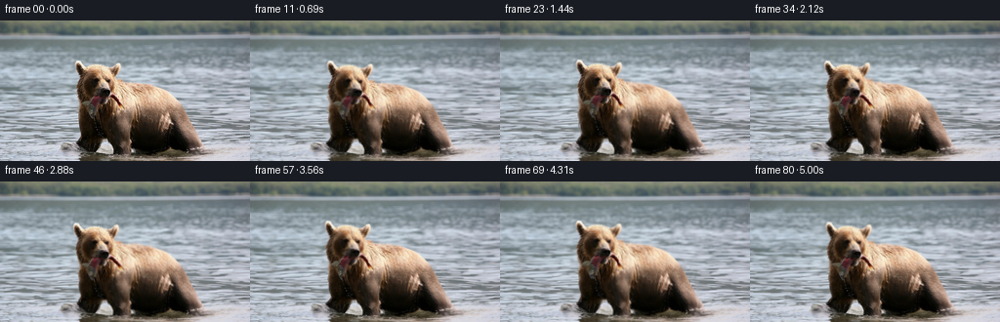
transition_check.png

代码变化
--- 上一保存版本
+++ 本次保存版本
@@ -0,0 +1,236 @@
+from pathlib import Path
+
+import numpy as np
+from PIL import Image, ImageDraw
+from scipy.ndimage import gaussian_filter, map_coordinates
+
+import artifact_io
+
+
+CASE_DIR = Path(__file__).resolve().parent
+WIDTH, HEIGHT = 256, 144
+FRAME_COUNT = 81
+FPS = 16
+
+
+def _draw_mask(scale, points=None, ellipses=None, blur=1.0):
+ canvas = Image.new("L", (WIDTH * scale, HEIGHT * scale), 0)
+ draw = ImageDraw.Draw(canvas)
+ if points:
+ draw.polygon([(int(x * scale), int(y * scale)) for x, y in points], fill=255)
+ for cx, cy, rx, ry in ellipses or []:
+ draw.ellipse(
+ (
+ int((cx - rx) * scale),
+ int((cy - ry) * scale),
+ int((cx + rx) * scale),
+ int((cy + ry) * scale),
+ ),
+ fill=255,
+ )
+ mask = np.asarray(
+ canvas.resize((WIDTH, HEIGHT), Image.Resampling.LANCZOS), dtype=np.float32
+ ) / 255.0
+ return gaussian_filter(mask, blur) if blur else mask
+
+
+def _sample(image, sx, sy):
+ coords = np.stack((sy, sx), axis=0)
+ if image.ndim == 2:
+ return map_coordinates(image, coords, order=1, mode="nearest")
+ return np.stack(
+ [
+ map_coordinates(image[..., channel], coords, order=1, mode="nearest")
+ for channel in range(image.shape[2])
+ ],
+ axis=-1,
+ )
+
+
+def _inverse_affine(xx, yy, pivot, dx, dy, angle, sx=1.0, sy=1.0):
+ ox = (xx - pivot[0] - dx) / sx
+ oy = (yy - pivot[1] - dy) / sy
+ cosine, sine = np.cos(angle), np.sin(angle)
+ return (
+ pivot[0] + cosine * ox + sine * oy,
+ pivot[1] - sine * ox + cosine * oy,
+ )
+
+
+def _nearest_fill(image, object_mask):
+ """Fill the foreground footprint with nearby water pixels."""
+ from scipy.ndimage import distance_transform_edt
+
+ background = object_mask < 0.12
+ _, indices = distance_transform_edt(~background, return_indices=True)
+ filled = image[indices[0], indices[1]].copy()
+ smooth = gaussian_filter(filled, sigma=(1.8, 2.8, 0))
+ weight = gaussian_filter(object_mask, 1.1)[..., None]
+ filled = image * (1.0 - weight) + smooth * weight
+ filled[:27] = image[:27]
+ return filled
+
+
+def build_masks():
+ body = _draw_mask(
+ 4,
+ points=[
+ (71, 45), (74, 38), (81, 33), (91, 30), (102, 32),
+ (110, 29), (121, 32), (130, 39), (134, 49), (136, 59),
+ (135, 67), (145, 65), (158, 66), (171, 69), (183, 74),
+ (193, 83), (199, 96), (202, 111), (203, 127), (200, 143),
+ (95, 143), (96, 129), (97, 115), (96, 104), (92, 98),
+ (88, 91), (83, 83), (78, 74), (75, 65), (73, 56),
+ ],
+ ellipses=[(99, 34, 15, 7), (91, 109, 10, 10)],
+ blur=0.75,
+ )
+ head = _draw_mask(
+ 4,
+ points=[
+ (73, 45), (77, 36), (86, 31), (98, 30), (108, 31),
+ (118, 31), (127, 36), (133, 44), (135, 54), (134, 64),
+ (130, 70), (124, 75), (120, 83), (116, 91), (112, 97),
+ (105, 102), (98, 99), (94, 92), (91, 84), (84, 78),
+ (79, 70), (75, 60),
+ ],
+ ellipses=[(103, 76, 20, 14)],
+ blur=1.2,
+ )
+ jaw = _draw_mask(
+ 4,
+ ellipses=[(104, 80, 19, 10)],
+ blur=1.25,
+ )
+ fish = _draw_mask(
+ 4,
+ points=[
+ (91, 78), (98, 76), (104, 78), (106, 84), (104, 91),
+ (103, 99), (101, 106), (97, 108), (94, 102), (94, 95),
+ (90, 88),
+ ],
+ blur=0.65,
+ )
+ return body, head, jaw, fish
+
+
+def render_frame(
+ image,
+ filled,
+ body_mask,
+ head_mask,
+ jaw_mask,
+ fish_mask,
+ xx,
+ yy,
+ t,
+):
+ tau = 2.0 * np.pi
+
+ # Water advection is strongest in open water and fades at the far bank.
+ water_ramp = np.clip((yy - 28.0) / 18.0, 0.0, 1.0)
+ bg_dx = water_ramp * (
+ 0.52 * np.sin(tau * (yy / 12.5 - 0.62 * t))
+ + 0.25 * np.sin(tau * (xx / 38.0 + 0.41 * t) + 0.8)
+ )
+ bg_dy = water_ramp * 0.34 * np.sin(
+ tau * (xx / 54.0 + 0.76 * t) + 1.1
+ )
+ background = _sample(filled, xx - bg_dx, yy - bg_dy)
+
+ # The body breathes and shifts its weight while the paws remain planted.
+ body_dx = 0.80 * np.sin(tau * t / 5.0 + 0.20)
+ body_dy = 0.34 * np.sin(tau * t / 2.7 + 0.90)
+ body_sx = 1.0 + 0.0060 * np.sin(tau * t / 2.7 + 1.2)
+ body_sy = 1.0 - 0.0035 * np.sin(tau * t / 2.7 + 1.2)
+ body_sx_grid, body_sy_grid = _inverse_affine(
+ xx, yy, (112.0, 104.0), body_dx, body_dy, 0.0, body_sx, body_sy
+ )
+
+ # Head motion pivots at the neck; a second field opens and closes the jaw.
+ head_angle = np.deg2rad(
+ 1.15 * np.sin(tau * t / 3.4 + 0.25)
+ + 0.34 * np.sin(tau * t / 1.7 + 0.80)
+ )
+ head_dx = body_dx + 0.65 * np.sin(tau * t / 4.0 + 0.55)
+ head_dy = body_dy + 0.55 * np.sin(tau * t / 2.25 + 0.10)
+ head_sx_grid, head_sy_grid = _inverse_affine(
+ xx, yy, (110.0, 91.0), head_dx, head_dy, head_angle
+ )
+ chew = 0.55 * np.sin(tau * t / 0.92 - 0.35)
+ head_sy_grid -= chew * jaw_mask
+
+ # The catch stays pinned at the muzzle but swings and rolls at its tail.
+ fish_angle = np.deg2rad(
+ 2.7 * np.sin(tau * t / 1.65 + 0.45)
+ + 0.8 * np.sin(tau * t / 4.6 - 0.30)
+ )
+ fish_dx = head_dx + 0.42 * np.sin(tau * t / 2.15 + 0.60)
+ fish_dy = head_dy + 0.55 * np.sin(tau * t / 1.55 + 0.20)
+ fish_sx_grid, fish_sy_grid = _inverse_affine(
+ xx, yy, (99.0, 80.0), fish_dx, fish_dy, fish_angle
+ )
+
+ head_weight = head_mask[..., None]
+ fish_weight = (0.92 * fish_mask)[..., None]
+ source_x = (
+ body_sx_grid[..., None] * (1.0 - head_weight)
+ + head_sx_grid[..., None] * head_weight
+ )
+ source_y = (
+ body_sy_grid[..., None] * (1.0 - head_weight)
+ + head_sy_grid[..., None] * head_weight
+ )
+ source_x = (
+ source_x * (1.0 - fish_weight) + fish_sx_grid[..., None] * fish_weight
+ )
+ source_y = (
+ source_y * (1.0 - fish_weight) + fish_sy_grid[..., None] * fish_weight
+ )
+
+ bear_color = _sample(image, source_x[..., 0], source_y[..., 0])
+ alpha_body = _sample(body_mask, body_sx_grid, body_sy_grid)
+ alpha_head = _sample(head_mask, head_sx_grid, head_sy_grid)
+ alpha = np.clip(np.maximum(alpha_body, alpha_head), 0.0, 1.0)[..., None]
+ frame = background * (1.0 - alpha) + bear_color * alpha
+
+ # A restrained rim of moving water catches the light around the lower body.
+ lower = np.clip((yy - 105.0) / 20.0, 0.0, 1.0)
+ rim = np.clip(gaussian_filter(body_mask, 3.2) - body_mask, 0.0, 0.16)
+ shimmer = rim * lower * (1.8 + 1.4 * np.sin(tau * (xx / 29.0 - 0.9 * t)))
+ frame += shimmer[..., None] * np.array([0.55, 0.75, 1.0], dtype=np.float32)
+
+ return np.clip(frame, 0, 255)
+
+
+def main():
+ image = np.asarray(
+ Image.open(CASE_DIR / "first_frame.png").convert("RGB"), dtype=np.float32
+ )
+ body_mask, head_mask, jaw_mask, fish_mask = build_masks()
+ filled = _nearest_fill(image, body_mask)
+
+ yy, xx = np.mgrid[0:HEIGHT, 0:WIDTH].astype(np.float32)
+ frames = np.empty((FRAME_COUNT, HEIGHT, WIDTH, 3), dtype=np.uint8)
+ frames[0] = image.astype(np.uint8)
+ for index in range(1, FRAME_COUNT):
+ t = index / FPS
+ frame = render_frame(
+ image,
+ filled,
+ body_mask,
+ head_mask,
+ jaw_mask,
+ fish_mask,
+ xx,
+ yy,
+ t,
+ )
+ frames[index] = np.clip(np.rint(frame), 0, 255).astype(np.uint8)
+
+ artifact_io.save(frames, CASE_DIR)
+ print(f"saved {FRAME_COUNT} frames to {CASE_DIR}")
+
+
+if __name__ == "__main__":
+ main()
候选 02 · 2026-11-08T20:50:01.527217+00:00 · 点开播放与检查图
inspection.png

transition_check.png
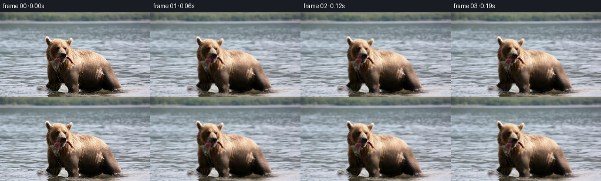
代码变化
--- 上一保存版本
+++ 本次保存版本
@@ -171,8 +171,10 @@
xx, yy, (99.0, 80.0), fish_dx, fish_dy, fish_angle
)
- head_weight = head_mask[..., None]
- fish_weight = (0.92 * fish_mask)[..., None]
+ # A soft blend at the neck prevents a visible cut when the head turns.
+ neck_guard = _draw_mask(4, ellipses=[(108, 83, 23, 16)], blur=3.0)
+ head_weight = np.clip(head_mask + 0.32 * neck_guard, 0.0, 1.0)[..., None]
+ fish_weight = (0.94 * fish_mask)[..., None]
source_x = (
body_sx_grid[..., None] * (1.0 - head_weight)
+ head_sx_grid[..., None] * head_weight
@@ -214,7 +216,11 @@
frames = np.empty((FRAME_COUNT, HEIGHT, WIDTH, 3), dtype=np.uint8)
frames[0] = image.astype(np.uint8)
for index in range(1, FRAME_COUNT):
- t = index / FPS
+ # Ease the first few frames into the established cycle to avoid a
+ # one-frame phase pop after the exact source image.
+ u = index / FPS
+ ease = np.clip((index - 1) / 7.0, 0.0, 1.0)
+ t = (0.04 + (u - 0.04) * ease) if index < 8 else u
frame = render_frame(
image,
filled,
候选 03 · 2026-11-08T20:50:06.413655+00:00 · 点开播放与检查图
inspection.png
transition_check.png
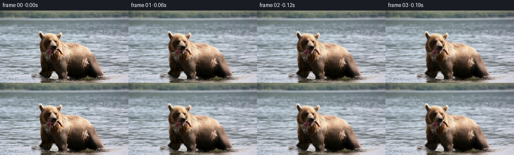
代码变化
代码未变化；重新保存了产物。
可观测工具行为
命令 1 · 2026-11-08T20:43:37.941053+00:00/bin/bash -c "pwd && rg --files -g '"'!*.png'"' -g '"'!*.jpg'"' -g '"'!*.mp4'"' | sort"
exit 0 命令 2 · 2026-11-08T20:43:38.054992+00:00/bin/bash -c "sed -n '1,240p' GENERATION_RULES.md"
exit 0 命令 3 · 2026-11-08T20:43:38.273440+00:00/bin/bash -c "sed -n '1,240p' prompt.txt"
exit 0 命令 4 · 2026-11-08T20:43:38.463479+00:00/bin/bash -c 'ls -lah && file first_frame.png && identify first_frame.png 2>/dev/null || true'
exit 0 命令 5 · 2026-11-08T20:43:48.860811+00:00/bin/bash -c "sed -n '1,260p' artifact_io.py"
exit 0 命令 6 · 2026-11-08T20:43:52.789669+00:00/bin/bash -c 'cat task_spec.json'
exit 0 命令 7 · 2026-11-08T20:44:06.545034+00:00/bin/bash -c "python - <<'PY'
from PIL import Image
im=Image.open('first_frame.png')
print(im.size, im.mode)
im.crop((55,30,180,125)).resize((500,380), Image.Resampling.NEAREST).save('.tmp/head_crop.png')
im.crop((0,25,256,144)).resize((768,357), Image.Resampling.NEAREST).save('.tmp/water_crop.png')
PY"exit 0 命令 8 · 2026-11-08T20:44:22.938373+00:00/bin/bash -c "python - <<'PY'
mods=['numpy','PIL','scipy','cv2','imageio','matplotlib']
for m in mods:
try:
x=__import__(m)
print(m,'ok',getattr(x,'__version__',''))
except Exception as e: print(m,'missing',e)
PY"
exit 0 命令 9 · 2026-11-08T20:44:23.139908+00:00/bin/bash -c "python - <<'PY'
from PIL import Image
import numpy as np
im=np.array(Image.open('first_frame.png'))
# Print rough colors at key points
for y,x in [(80,100),(70,110),(90,95),(85,90),(95,100),(110,90),(60,90),(130,150),(100,150),(20,100),(10,10),(60,220)]: print((x,y), im[y,x])
PY"exit 0 命令 10 · 2026-11-08T20:44:30.904363+00:00/bin/bash -c "python - <<'PY'
from PIL import Image
im=Image.open('first_frame.png')
im.crop((60,30,150,125)).resize((720,760), Image.Resampling.LANCZOS).save('.tmp/bear_detail.png')
PY"exit 0 命令 11 · 2026-11-08T20:44:38.826573+00:00/bin/bash -c "python - <<'PY'
from PIL import Image
im=Image.open('first_frame.png')
im.crop((35,20,220,144)).resize((740,496), Image.Resampling.LANCZOS).save('.tmp/bear_context.png')
PY"exit 0 命令 12 · 2026-11-08T20:44:53.524138+00:00/bin/bash -c "python - <<'PY'
from PIL import Image, ImageDraw, ImageFont
im=Image.open('first_frame.png').resize((1024,576),Image.Resampling.NEAREST)
d=ImageDraw.Draw(im)
for x in range(0,256,20):
X=x*4; d.line((X,0,X,576), fill=(255,0,0), width=1); d.text((X+2,2),str(x),fill=(255,255,0))
for y in range(0,144,20):
Y=y*4; d.line((0,Y,1024,Y), fill=(255,0,0), width=1); d.text((2,Y+2),str(y),fill=(255,255,0))
im.save('.tmp/grid.png')
PY"exit 0 命令 13 · 2026-11-08T20:45:01.745569+00:00/bin/bash -c "python - <<'PY'
from PIL import Image
im=Image.open('first_frame.png')
for i,box in enumerate([(0,0,256,30),(0,25,256,65),(0,55,256,105),(0,90,256,144)]):
im.crop(box).resize((768,(box[3]-box[1])*3),Image.Resampling.NEAREST).save(f'.tmp/band{i}.png')
PY"exit 0 命令 14 · 2026-11-08T20:45:30.939549+00:00/bin/bash -c "python - <<'PY'
import cv2, numpy as np
from PIL import Image
im=cv2.imread('first_frame.png')
h,w=im.shape[:2]
mask=np.full((h,w),cv2.GC_BGD,np.uint8)
# probable bear region
poly=np.array([[68,40],[78,31],[92,30],[103,33],[117,30],[129,38],[136,50],[136,67],[145,60],[169,66],[193,81],[204,112],[202,143],[96,143],[99,120],[96,102],[84,96],[80,76],[75,65]],np.int32)
cv2.fillPoly(mask,[poly],cv2.GC_PR_FGD)
# probable surrounding water
mask[25:,:]=np.where(mask[25:,:]==cv2.GC_BGD,cv2.GC_PR_BGD,mask[25:,:])
# definite background top
mask[:28,:]=cv2.GC_BGD
# definite fg cores
cv2.ellipse(mask,(103,64),(14,23),0,0,360,cv2.GC_FGD,-1)
cv2.ellipse(mask,(148,105),(30,35),0,0,360,cv2.GC_FGD,-1)
cv2.ellipse(mask,(119,93),(14,25),0,0,360,cv2.GC_FGD,-1)
# fish
fish=np.array([[93,79],[106,77],[102,88],[99,101],[89,99],[91,90]],np.int32)
cv2.fillPoly(mask,[fish],cv2.GC_FGD)
bgd=np.zeros((1,65),np.float64); fgd=np.zeros((1,65),np.float64)
cv2.grabCut(im,mask,None,bgd,fgd,6,cv2.GC_INIT_WITH_MASK)
a=np.where((mask==cv2.GC_FGD)|(mask==cv2.GC_PR_FGD),1,0).astype(np.uint8)*255
# clean
n,lab,stats,cent=cv2.connectedComponentsWithStats(a)
for i in range(1,n):
if stats[i,cv2.CC_STAT_AREA]<60: a[lab==i]=0
# close small
# a=cv2.morphologyEx(a,cv2.MORPH_CLOSE,np.ones((3,3),np.uint8))
Image.fromarray(a).save('.tmp/mask.png')
rgb=cv2.cvtColor(im,cv2.COLOR_BGR2RGB)
out=np.zeros_like(rgb); out[:]=[0,255,0]
out[a>0]=rgb[a>0]
Image.fromarray(out).resize((768,432),Image.Resampling.NEAREST).save('.tmp/grabcut.png')
print(a.mean()/255, a.sum()/255)
PY"exit 0 命令 15 · 2026-11-08T20:45:45.173294+00:00/bin/bash -c "python - <<'PY'
import cv2, numpy as np
from PIL import Image
im=cv2.imread('first_frame.png')
h,w=im.shape[:2]
mask=np.full((h,w),cv2.GC_BGD,np.uint8)
# use roughly accurate silhouette based on observed pixels
outer=np.array([[71,40],[77,34],[88,30],[102,32],[114,29],[127,36],[134,47],[135,58],[136,67],[148,64],[165,66],[179,70],[191,79],[198,91],[201,110],[202,129],[199,143],[93,143],[95,129],[98,112],[98,101],[93,98],[88,90],[81,81],[77,70],[75,57]],np.int32)
cv2.fillPoly(mask,[outer],cv2.GC_PR_FGD)
# actual fg deep inside
cv2.ellipse(mask,(105,55),(20,18),0,0,360,cv2.GC_FGD,-1)
cv2.ellipse(mask,(116,88),(14,22),0,0,360,cv2.GC_FGD,-1)
cv2.ellipse(mask,(149,108),(31,30),0,0,360,cv2.GC_FGD,-1)
# background water surrounding bear
mask[:30,:]=cv2.GC_BGD
mask[30:,:]=np.where(mask[30:,:]==cv2.GC_BGD,cv2.GC_PR_BGD,mask[30:,:])
# exclude water gap under head/neck
mask[100:143,0:94]=cv2.GC_PR_BGD
mask[98:143,203:]=cv2.GC_PR_BGD
bgd=np.zeros((1,65),np.float64); fgd=np.zeros((1,65),np.float64)
cv2.grabCut(im,mask,None,bgd,fgd,8,cv2.GC_INIT_WITH_MASK)
a=np.where((mask==cv2.GC_FGD)|(mask==cv2.GC_PR_FGD),1,0).astype(np.uint8)*255
n,lab,stats,cent=cv2.connectedComponentsWithStats(a)
for i in range(1,n):
if stats[i,cv2.CC_STAT_AREA]<50: a[lab==i]=0
Image.fromarray(a).save('.tmp/mask2.png')
rgb=cv2.cvtColor(im,cv2.COLOR_BGR2RGB); out=np.zeros_like(rgb);out[:]=[0,255,0];out[a>0]=rgb[a>0]
Image.fromarray(out).resize((768,432),Image.Resampling.NEAREST).save('.tmp/grabcut2.png')
print(a.sum()/255)
PY"exit 0 命令 16 · 2026-11-08T20:46:15.934877+00:00/bin/bash -c "python - <<'PY'
from PIL import Image,ImageDraw
im=Image.open('first_frame.png').crop((80,65,125,115)).resize((450,500),Image.Resampling.NEAREST)
d=ImageDraw.Draw(im)
for x in range(80,126,5):
X=(x-80)*10; d.line((X,0,X,500),fill=(255,0,0),width=1); d.text((X+2,2),str(x),fill=(255,255,0))
for y in range(65,116,5):
Y=(y-65)*10; d.line((0,Y,450,Y),fill=(255,0,0),width=1); d.text((2,Y+2),str(y),fill=(255,255,0))
im.save('.tmp/fish_grid.png')
PY"exit 0 命令 17 · 2026-11-08T20:46:23.879798+00:00/bin/bash -c "python - <<'PY'
from PIL import Image
im=Image.open('first_frame.png')
im.crop((70,25,145,95)).resize((750,700),Image.Resampling.NEAREST).save('.tmp/head_gridless.png')
PY"exit 0 命令 18 · 2026-11-08T20:46:32.324105+00:00/bin/bash -c "python - <<'PY'
import cv2, numpy as np
im=cv2.imread('first_frame.png')
# inspect hsv saturation/value around fish bbox
hsv=cv2.cvtColor(im,cv2.COLOR_BGR2HSV)
for y in range(72,104,4):
print(y, ' '.join(f'{im[y,x].tolist()}' for x in range(88,108,4)))
PY"exit 0 命令 19 · 2026-11-08T20:46:37.087919+00:00/bin/bash -c "python - <<'PY'
from PIL import Image
im=Image.open('first_frame.png')
im.crop((75,65,120,115)).resize((720,800),Image.Resampling.LANCZOS).save('.tmp/fish_detail.png')
PY"exit 0 命令 20 · 2026-11-08T20:46:55.937449+00:00/bin/bash -c "python - <<'PY'
from PIL import Image
im=Image.open('first_frame.png')
im.crop((80,95,210,144)).resize((780,294),Image.Resampling.LANCZOS).save('.tmp/body_lower.png')
PY"exit 0 命令 21 · 2026-11-08T20:48:27.633224+00:00/bin/bash -c 'MPLCONFIGDIR=.tmp/mpl python generate.py'
exit 1 命令 22 · 2026-11-08T20:48:38.888056+00:00/bin/bash -c 'MPLCONFIGDIR=.tmp/mpl python generate.py'
exit 1 命令 23 · 2026-11-08T20:48:54.460939+00:00/bin/bash -c 'MPLCONFIGDIR=.tmp/mpl python generate.py'
exit 0 命令 24 · 2026-11-08T20:49:07.570767+00:00/bin/bash -c 'ls -lh pixels.npz index.html frames/00.png frames/80.png inspection.png transition_check.png && du -sh frames'
exit 0 命令 25 · 2026-11-08T20:49:07.769383+00:00/bin/bash -c "command -v ffmpeg || true; command -v python; python - <<'PY'
import json
s=json.load(open('task_spec.json'))
print(s)
PY"exit 0 命令 26 · 2026-11-08T20:49:08.147747+00:00/bin/bash -c "python - <<'PY'
from PIL import Image
import numpy as np
src=np.array(Image.open('first_frame.png').convert('RGB'))
first=np.array(Image.open('frames/00.png').convert('RGB'))
print('exact', np.array_equal(src,first), 'shape', first.shape)
# changed pixel counts and MAE between selected frames
frames=[np.array(Image.open(f'frames/{i:02d}.png')) for i in range(81)]
for i in [1,2,4,8,16,24,32,40,48,56,64,72,80]:
d=np.abs(frames[i].astype(int)-frames[i-1].astype(int))
print(i, 'changed',int((d>0).any(2).sum()),'mae',round(float(d.mean()),3),'max',int(d.max()))
PY"exit 0 命令 27 · 2026-11-08T20:49:14.022107+00:00/bin/bash -c "python - <<'PY'
from PIL import Image
import numpy as np
for i in [0,1,2,8,16,24,32,40,48,56,64,72,80]:
im=Image.open(f'frames/{i:02d}.png').crop((70,25,140,112)).resize((350,435),Image.Resampling.NEAREST)
im.save(f'.tmp/head_{i:02d}.png')
PY"exit 0 命令 28 · 2026-11-08T20:49:26.056322+00:00/bin/bash -c "python - <<'PY'
from PIL import Image,ImageDraw
inds=[0,1,8,16,24,32,40,48,56,64,72,80]
out=Image.new('RGB',(350*4,(435+20)*3),(20,20,20));d=ImageDraw.Draw(out)
for k,i in enumerate(inds):
im=Image.open(f'.tmp/head_{i:02d}.png')
x=(k%4)*350;y=(k//4)*455
out.paste(im,(x,y+20));d.text((x+4,y+3),f'{i:02d}',fill='white')
out.save('.tmp/head_montage.png')
PY"exit 0 命令 29 · 2026-11-08T20:49:34.688166+00:00/bin/bash -c "python - <<'PY'
from PIL import Image
import numpy as np
# diff frame 1 to frame 2 and frame0 to 1 for artifact review
for a,b in [(0,1),(1,2),(24,25)]:
A=np.array(Image.open(f'frames/{a:02d}.png')).astype(np.int16);B=np.array(Image.open(f'frames/{b:02d}.png')).astype(np.int16)
d=np.abs(A-B).max(2); v=np.clip(d*8,0,255).astype(np.uint8)
Image.fromarray(v).resize((768,432),Image.Resampling.NEAREST).save(f'.tmp/diff_{a}_{b}.png')
PY"exit 0 命令 30 · 2026-11-08T20:50:00.004383+00:00/bin/bash -c 'MPLCONFIGDIR=.tmp/mpl python generate.py'
exit 0 命令 31 · 2026-11-08T20:50:10.196745+00:00/bin/bash -c "python - <<'PY'
from PIL import Image
import numpy as np, json
src=np.array(Image.open('first_frame.png').convert('RGB'))
frames=np.array([np.array(Image.open(f'frames/{i:02d}.png').convert('RGB')) for i in range(81)])
print('shape',frames.shape,'dtype',frames.dtype)
print('first exact',np.array_equal(src,frames[0]))
d=np.abs(frames[1:].astype(np.int16)-frames[:-1].astype(np.int16))
print('transition MAE',d.mean(),'first MAE',np.abs(frames[1].astype(int)-frames[0]).mean())
print('mean adjacent MAE',d.mean(axis=(1,2,3)).round(2).tolist())
# validate npz decoding
z=np.load('pixels.npz')['pixels']
packed=z.astype(np.uint32)
dec=np.stack([(packed>>16)&255,(packed>>8)&255,packed&255],axis=-1).transpose(2,0,1,3).astype(np.uint8)
print('npz',z.shape,'decoded',dec.shape,'match',np.array_equal(dec,frames))
print('index size',__import__('os').path.getsize('index.html'))
PY"exit 0 命令 32 · 2026-11-08T20:50:17.630121+00:00/bin/bash -c "python - <<'PY'
from PIL import Image,ImageDraw
inds=[0,1,2,3,4,5,6,7,8,16,24,32]
out=Image.new('RGB',(280*4,(174+20)*3),(20,20,20));d=ImageDraw.Draw(out)
for k,i in enumerate(inds):
im=Image.open(f'frames/{i:02d}.png').crop((60,25,130,112)).resize((280,174),Image.Resampling.NEAREST)
x=(k%4)*280;y=(k//4)*194
out.paste(im,(x,y+20));d.text((x+4,y+3),f'frame {i:02d}',fill='white')
out.save('.tmp/early_motion.png')
PY"exit 0 命令 33 · 2026-11-08T20:50:26.519565+00:00/bin/bash -c 'git status --short 2>/dev/null || true; python -m py_compile generate.py artifact_io.py'
exit 0 视觉工具实际返回图片 1

视觉工具实际返回图片 2
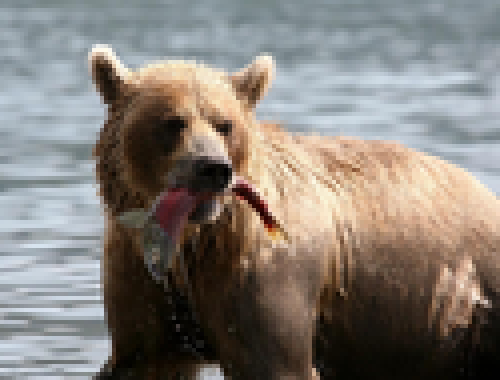
视觉工具实际返回图片 3
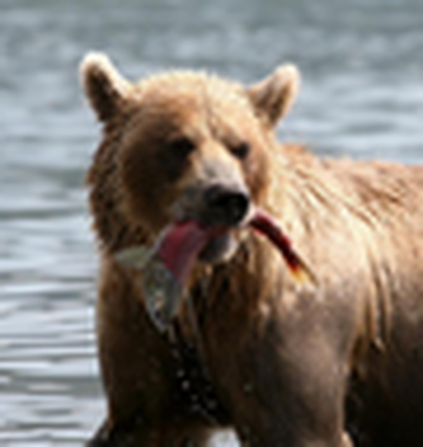
视觉工具实际返回图片 4
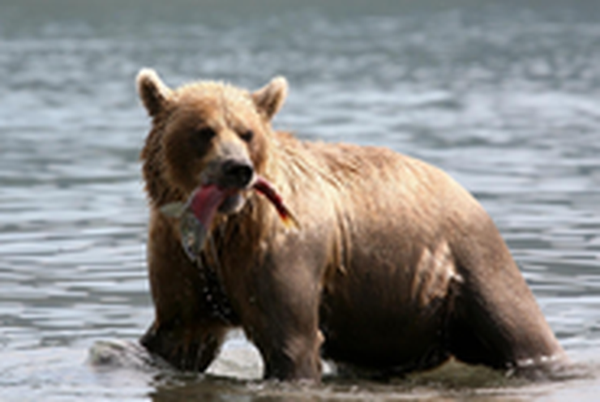
视觉工具实际返回图片 5
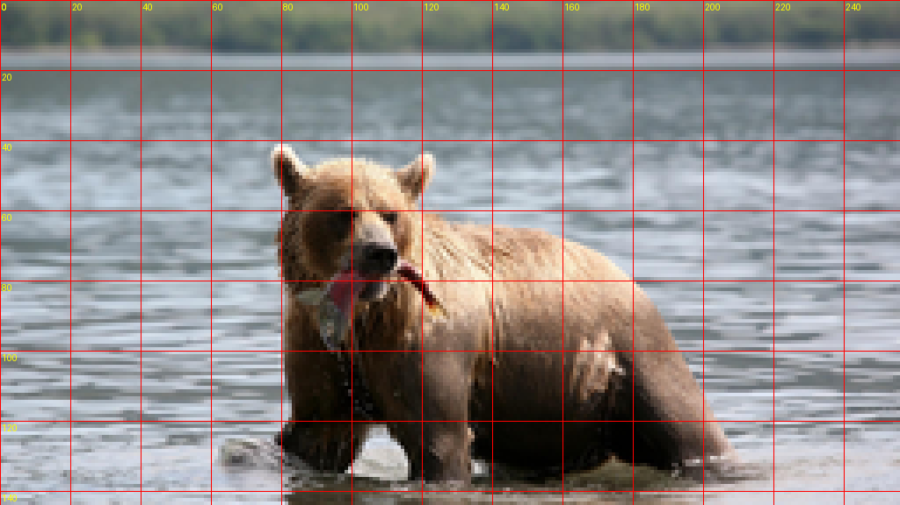
视觉工具实际返回图片 6
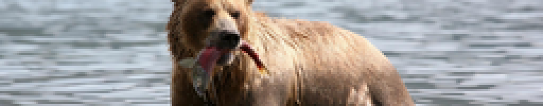
视觉工具实际返回图片 7
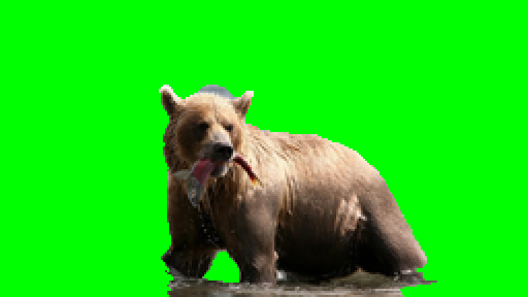
视觉工具实际返回图片 8
视觉工具实际返回图片 9
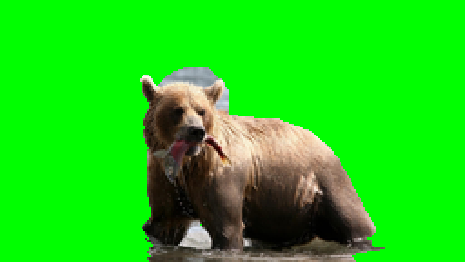
视觉工具实际返回图片 10
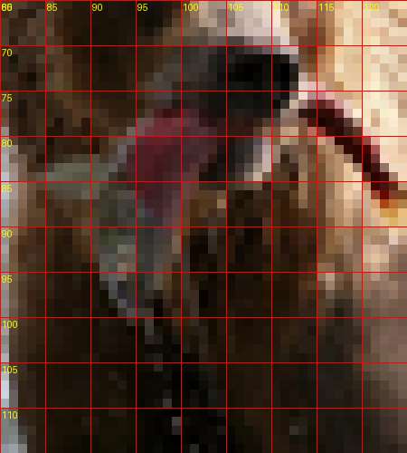
视觉工具实际返回图片 11
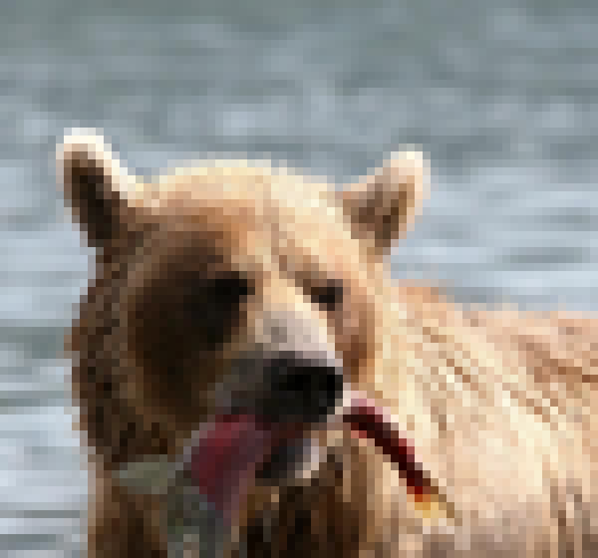
视觉工具实际返回图片 12
视觉工具实际返回图片 13
视觉工具实际返回图片 14
视觉工具实际返回图片 15
视觉工具实际返回图片 16

视觉工具实际返回图片 17
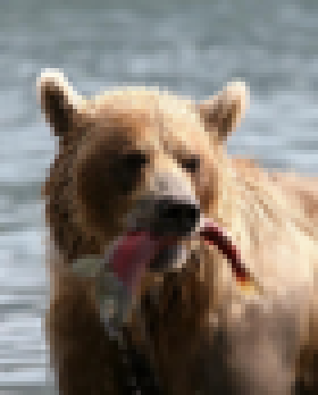
视觉工具实际返回图片 18
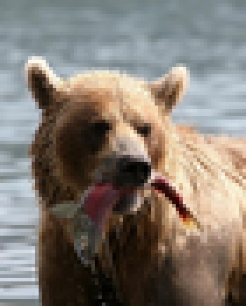
视觉工具实际返回图片 19
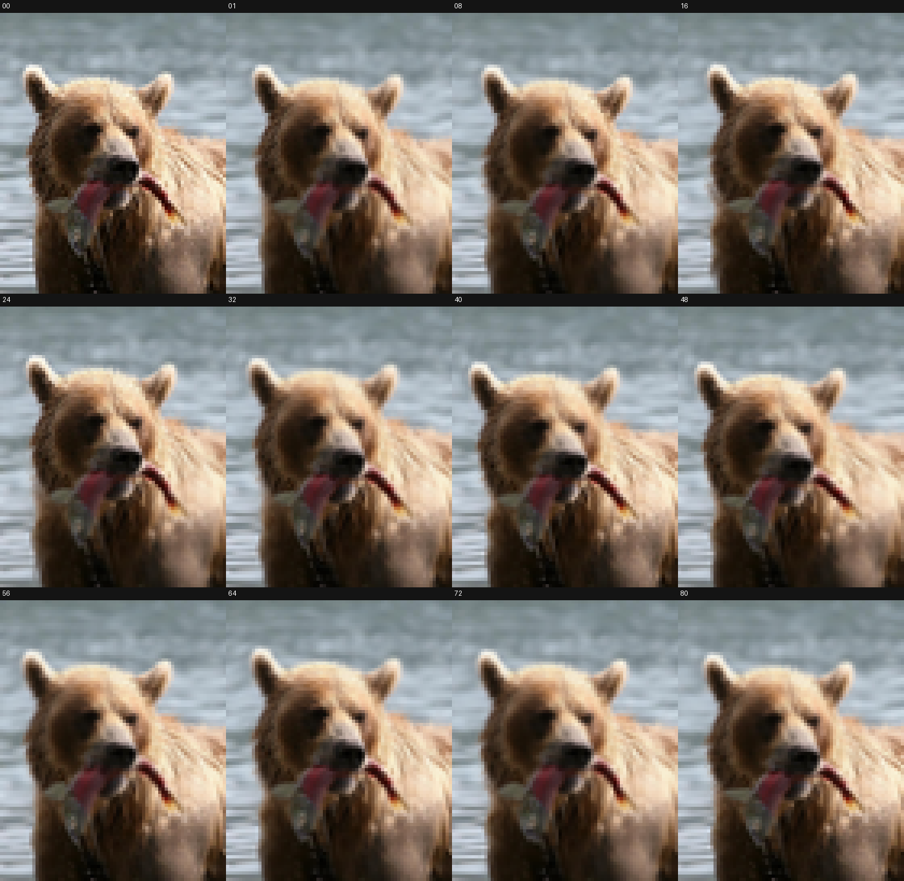
视觉工具实际返回图片 20
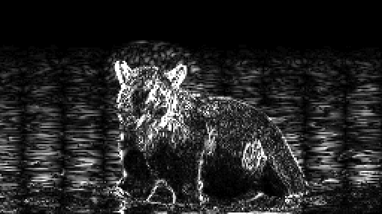
视觉工具实际返回图片 21
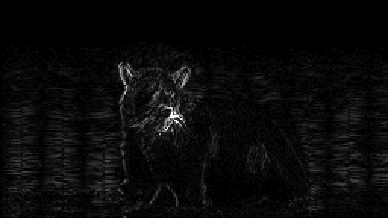
视觉工具实际返回图片 22

视觉工具实际返回图片 23
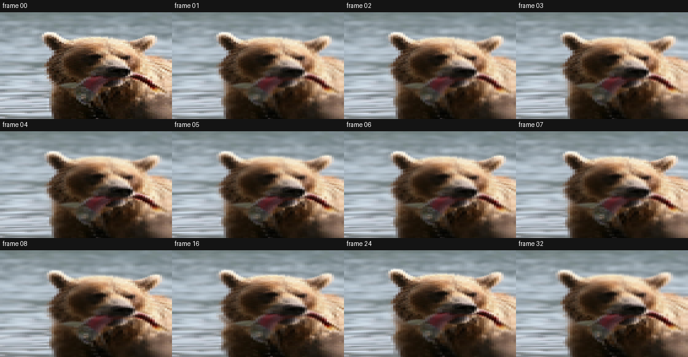
保存候选 3 份；完成命令 33 次；可验证图片返回 23 张。原始 API 响应与完整日志保留在本地。